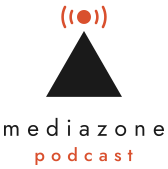

Bosh sahifa / Podkast
Podkast va jonli efir
Har bir ishtirokchiga alohida yaqin plan va bitta umumiy kadr. Tayyor podkast boshida professional tizer bilan chiqadi.

Ishtirokchilar soniga qarab
Kameralar soni = har kishiga bitta yaqin plan + 1 umumiy kadr. Dollardagi narx to‘lov kunidagi bank kursi bo‘yicha so‘mda to‘lanadi.
| Ishtirokchilar | Kamera | Standart montaj | Premium | Montajsiz |
|---|---|---|---|---|
| 2 kishi | 3 ta | $180 | $230 | $100 |
| 3 kishi | 4 ta | $230 | $280 | $120 |
| 4 kishi | 5 ta | $280 | $320 | $140 |
To‘liq montaj
- Kameralar orasida montaj
- Boshida professional tizer
Montaj + 4 ta Reels
- Standartdagi hamma narsa
- Eng dinamik qismlardan 4 ta Reels
- Podkastni Instagram’da ham ishlatasiz
Faqat syomka
- Hamma kameralardan yozuvlar
- Montajni o‘zingiz qilasiz
Syomkadan tayyor epizodgacha
Podkast uchun Classic va Onyx zallari. Reels xonasi podkast uchun mo‘ljallanmagan.
Syomka
Odatda 2–3 soat davom etadi. Mikrofon, yorug‘lik va kameralar tayyor turadi.
Montaj
Tayyor epizod 30 daqiqadan 1,5 soatgacha bo‘ladi.
5–7 kun
Montaj qilingan podkast 5–7 kun ichida tayyor bo‘ladi.
Izohlar
Taymkod bilan yuborasiz: “12:35–12:48 ni kesing”.
Vebinar va jonli efir studiyadan
YouTube, Instagram va Telegram’ga to‘g‘ridan to‘g‘ri efir. So‘rovga ko‘ra boshqa platformalarga ham.
- YouTube, Instagram, Telegram’ga efir
- Efirni yozib olish oldindan kelishiladi

Birinchi epizodni yozdiramizmi?
Ishtirokchilar sonini va sanani ayting, qolganini biz tayyorlaymiz.